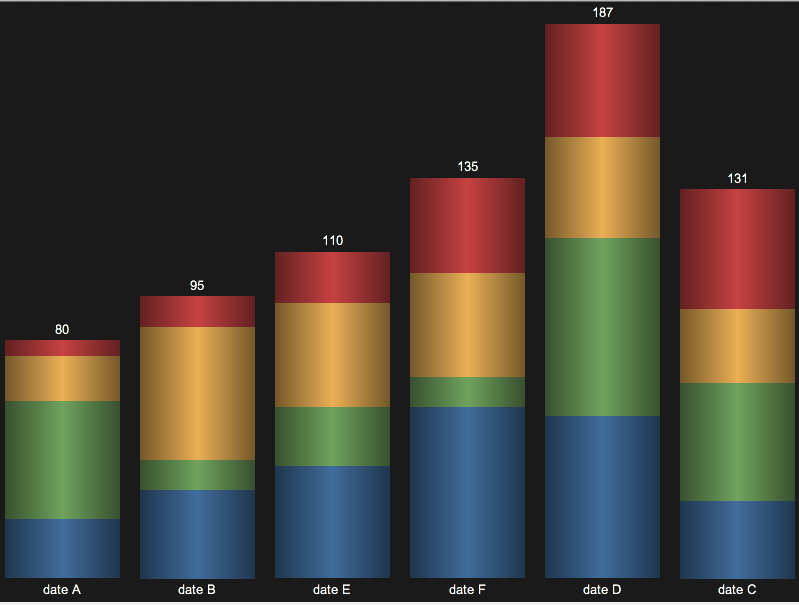
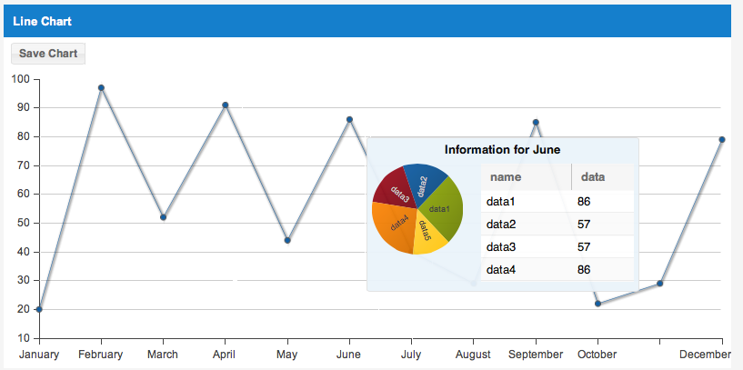
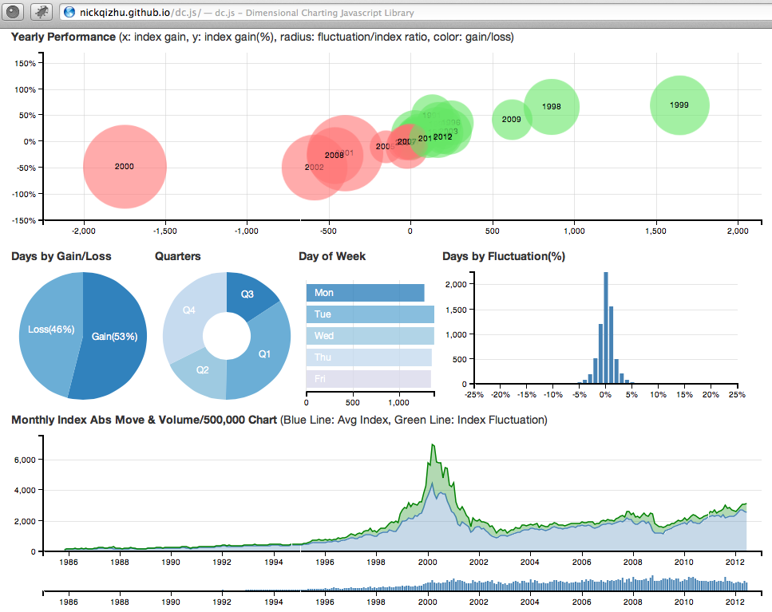
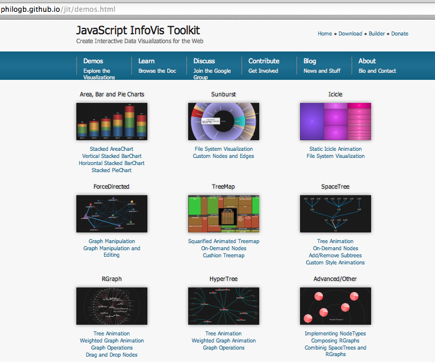
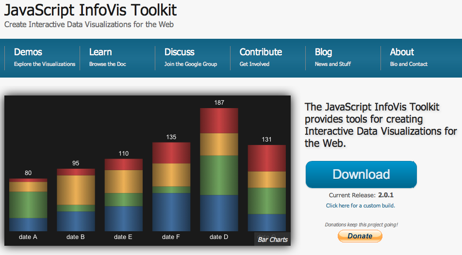
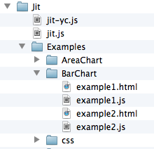
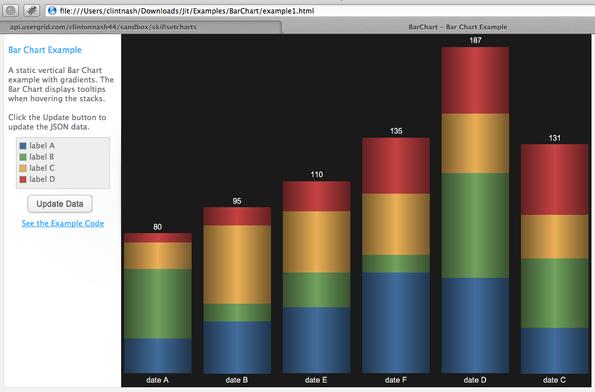
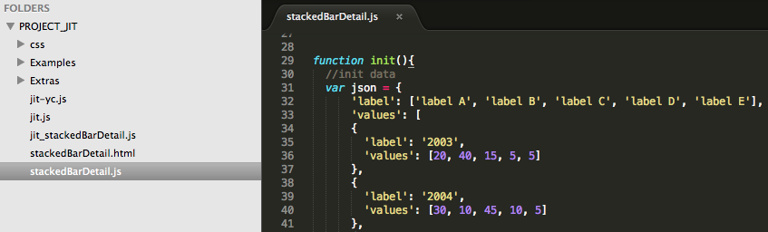
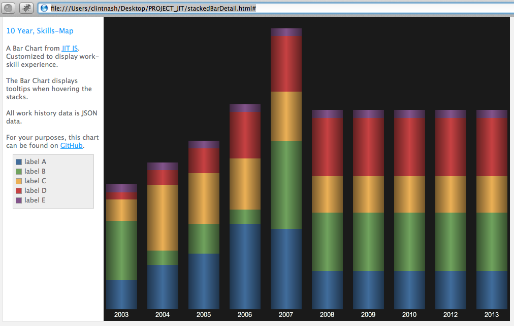

Get Started with
Rich JS Charts
in Ten Minutes
by Clint Nash - @adaptivepattern
Slides at URL: adaptivepatterns.net/jscharts
To me, this is beautiful...
What do you think?
Rich Visualization.
Customization.
Expressiveness.
Rich JS Charts
~Is an expanding ecosystem~
And
Data Visualization
~Is an emerging art for the web~
Tonight
Three steps to get started with Rich JS Charts:
- Find it.
- Download it.
- Build it out.
~Plus, an example that you can use.
Step 1: Find It
- In an expanding ecosystem.
- There are many options.
- It is hard to find what you need.
JS Chart Ecosystem
~A Quick Tour~
GitHub ~ A "JavaScript Chart" search yields 143 JS Chart repositories. One week later - 146.
StackOverflow ~ A JS Chart question: 223 upvotes, viewed 135,000+ times in 4 years, 26 answers.
Trend Leaks - 50 plus charts two months ago.
Can We Visualize?
The next slide is 55 JS Charts in a WordCloud( using tagcanvas.js), and is available on GitHub
JS Chart Ecosystem
Links you to all the leading JS Charts.
Key Takeaways:
- There are many options.
- New solutions are emerging.
- Look for a "best-fit" framework.
- Frameworks are building on frameworks.
Step 2: Download it
To demo, I chose something new.
JIT (JavaScript InfoVis Toolkit)
And this "Stacked BarChart"
~Click Download.
In your download...
- Find examples folder.

- Find the barchart.
 - Double-click it.
Tada! A Raw BarChart
~Ready to edit.
Key Takeaways:
- Getting Started is trivial!
- Standard workflow.
- Low barrier of entry.
- Anyone can do this.
~Nothing technical so far. Know where to: look, download, and click.
Step 3: Build it out
- Adapt.
- Extend.
- Customize.
- All the code is at your fingertips.
~This is where it gets good!
Customizing a Chart
I. MockData Example - JSON or SAAS(apigee).
II. Adaptation Example - alter charts infinitely.
I. MockData
~Modify some JSON and some other trivial stuff.
Result:
II. Adaptation Example
For You!
~Original~BarChart:
JIT JS~Modified~SkillsMap:
GitHub!Slides at: adaptivepatterns.net/jscharts
Demo Code
I wanted a BarChart that would visualize technical experience in an interactive graph that I can post, print, and update overtime for employers.
~It is an example of extending a chart that you can use!
The result was
~ SkillsMap ~
Skills Map
I plan to make the hover, clickable, so that it tells a story of each experience.On GitHub.
Key Takeaways:
- All the code is at your fingertips.
- If you can see it - you can build with it.
- Charts can be adapted and extended in infinite ways.
- All you need to know is HTML, CSS, and JS.
To me this is the
~Emerging Art of Data Visualization~
- Explosion of tools.
- Low barrier of entry.
- And infinitely extensible expressiveness.
Please...
~Download:
SkillsMap~Follow:
@adaptivepatternThen send pull requests and ask questions on twittersphere.
Slides at: adaptivepatterns.net/jscharts
We have only just begun.
Thank You!
Questions?
I have stickers, connect with me afterward!